Severo Sarduy · 1972
Una máquina de lectura en tres engranajes
Provocación
Una sola palabra, anotada en su hoja.
¡Cuánto trabajo!
La exclamación «infalible» ante toda capilla de Churriguera · Sarduy 1972, §4 a
¿Naturaleza desbordada o artificio calculado?
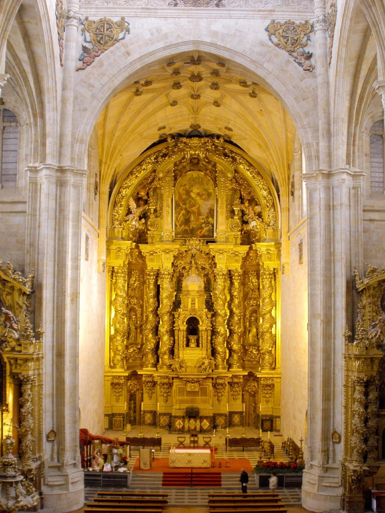
El desafío
Sarduy no quiere ampliar el concepto, sino restringirlo:
un esquema operatorio preciso, que no dejara intersticios
Sarduy 1972, §1 · para el arte latinoamericano de su tiempo
Para Valentín Díaz, el neobarroco es «antes una máquina lectora que una poética».
Díaz 2011, apostilla 4
| I · Artificio | sustitución · proliferación · condensación |
| II · Parodia | intertextualidad · intratextualidad |
| III · Salida | erotismo · espejo · revolución |
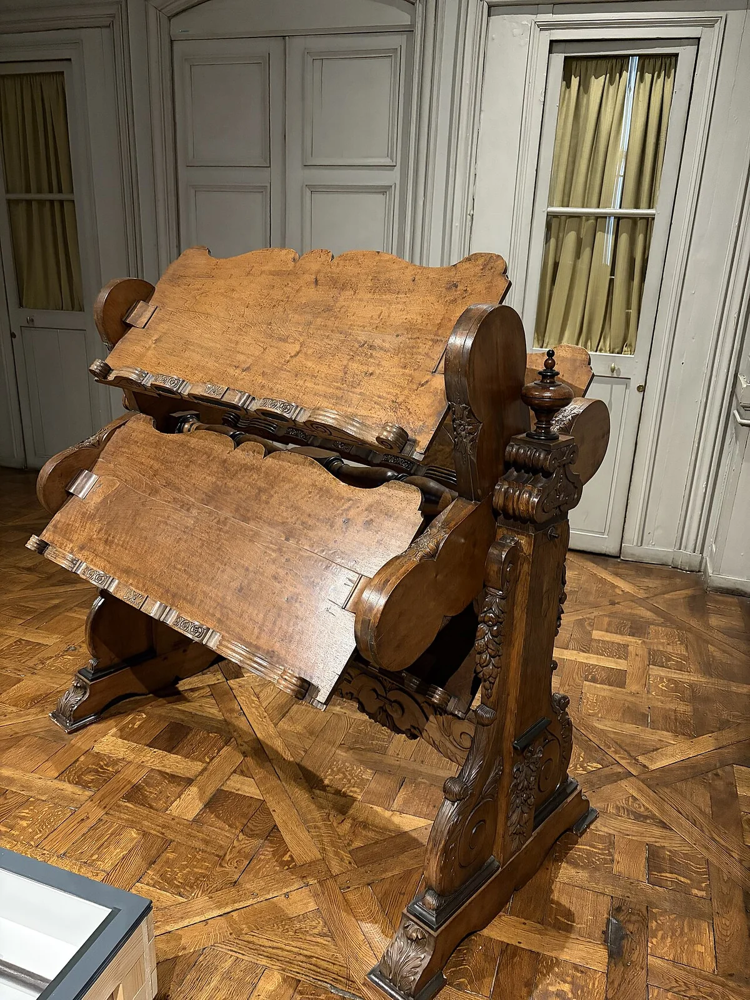
§1 · Lo barroco
destinado, desde su nacimiento, a la ambigüedad, a la difusión semántica
Sarduy 1972, §1
Antes
El matiz progresivo del sfumato; la sutileza simbólica de los santos con sus atributos.
Leonardo, Virgen de las Rocas (detalle), Louvre · dominio público
Trento y los jesuitas
Un arte «literalmente del tape-à-l’oeil»: nitidez teatral, claroscuro recortado, pies de mendigos y manos callosas.
Caravaggio, Madonna di Loreto (c. 1604-06), Roma · dominio público
§1 · Contrarreforma
§1 · Un estallido
Nota 1 de Sarduy: no es un corte epistemológico (de la ideología a la ciencia), sino «el paso de una ideología a otra ideología».
§1 · Manifestaciones simultáneas
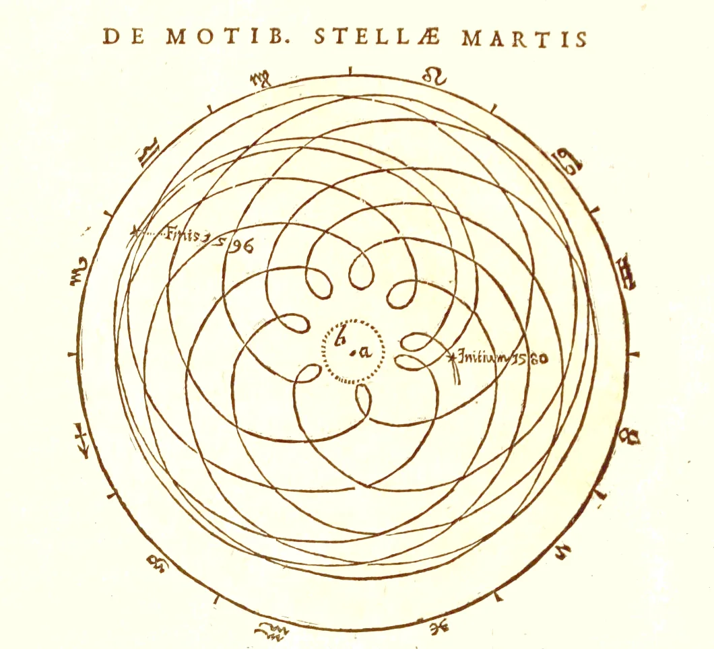
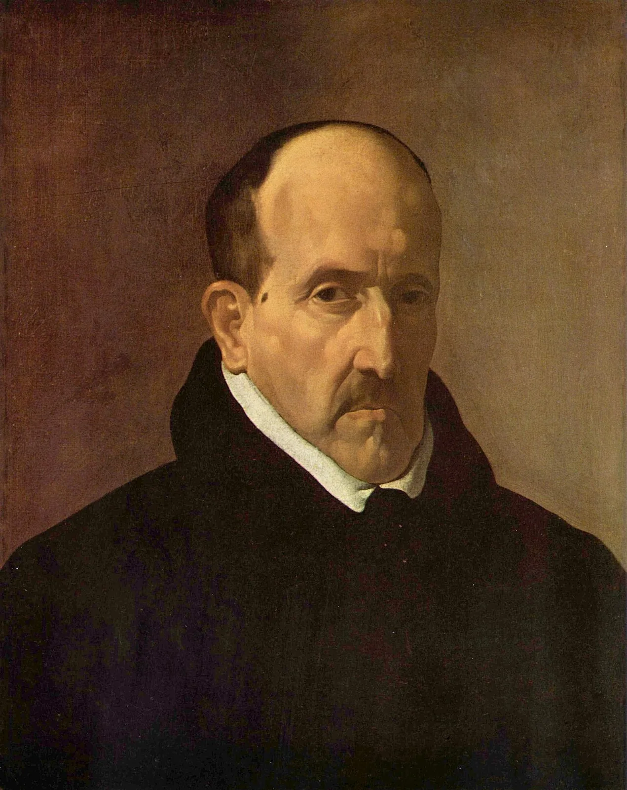
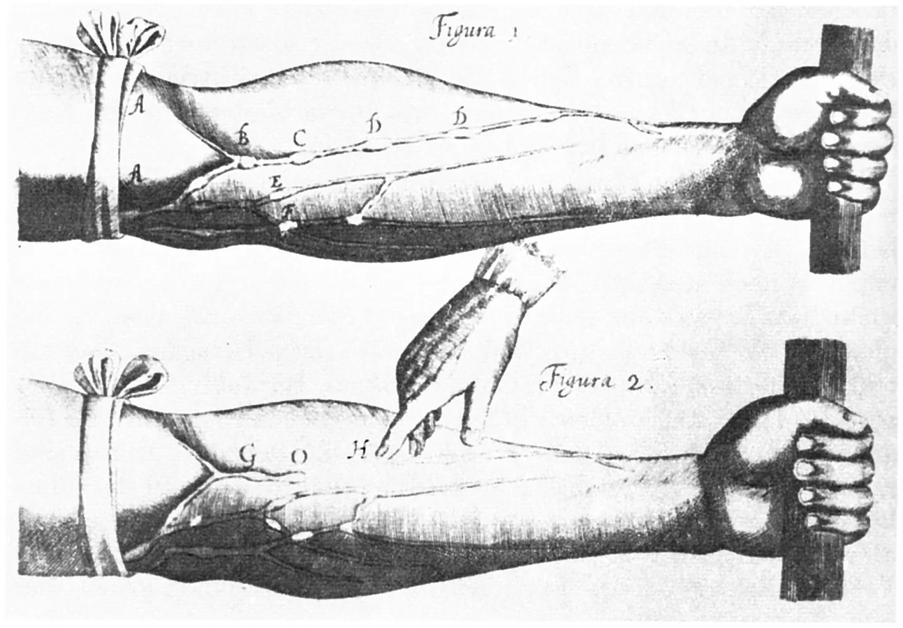
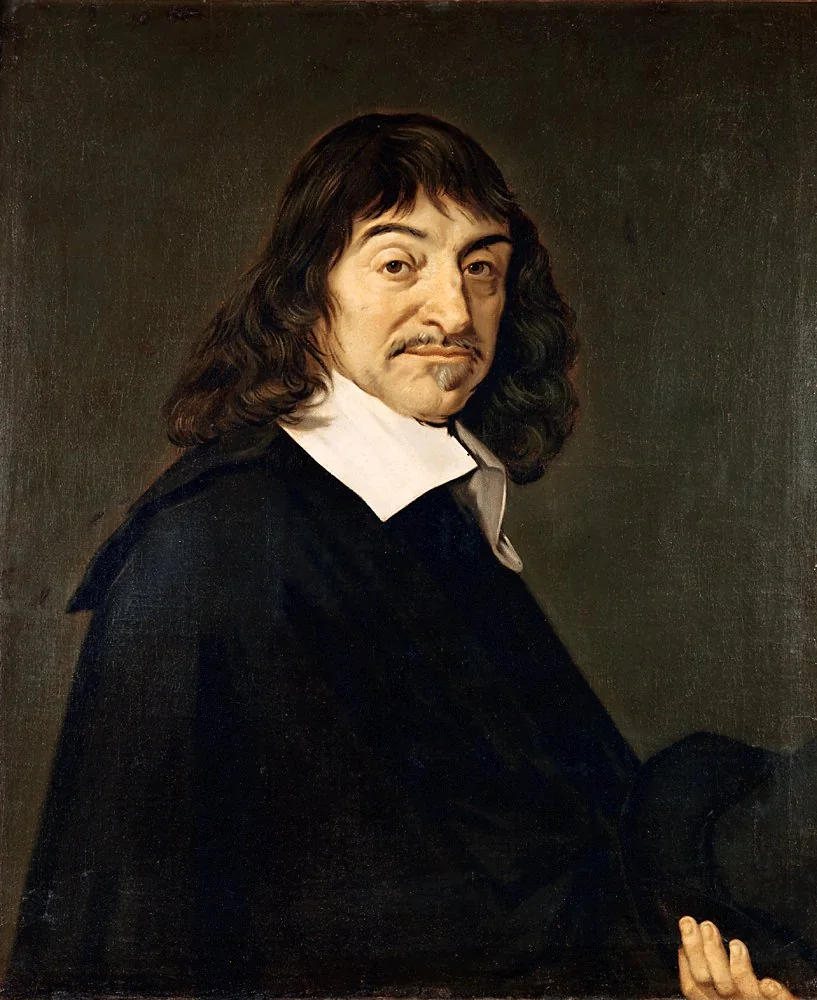
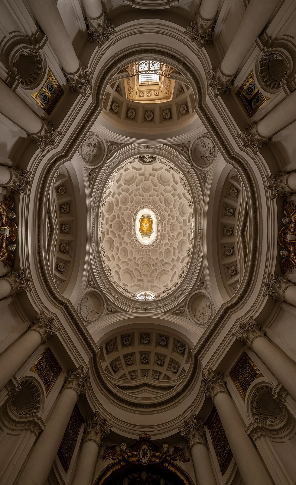
No hay una causa que baje de la ciencia al arte: son manifestaciones simultáneas de un mismo estallido.
Kepler, Astronomia nova; Velázquez, Góngora; Harvey, De motu cordis; Hals, Descartes: dominio público · Cúpula de San Carlo: Fiat 500e, CC BY-SA 4.0
Lectura posterior · Sarduy 1974, citado por Díaz
En esta cámara, a veces el eco [precede] a la voz. Díaz 2011, apostilla 6
Lo que oye Eugenio d’Ors
voces de tórtolas, voces de trompetas, oídas en un jardín botánico
Lo barroco como retorno a lo primigenio: la nostalgia del Paraíso Perdido.
Lo que ve Sarduy
la apoteosis del artificio, la ironía e irrisión de la naturaleza
Volutas, arabescos, máscaras, confitados sombreros: artificialización (Rousset).
§2 · Artificio
Matiz de Díaz: el desacuerdo con d’Ors «no debería ser sobreestimado»; con él, el barroco se vuelve lo barroco, una constante que atraviesa épocas.
§2 · Artificialización
raudos torbellinos de Noruega
los halcones
paréntesis frondosos / al período [son] su corriente
las islas de un río
de fugitiva plata / la bisagra, aunque estrecha, abrazadora
el estrecho de Magallanes
Góngora, Soledades (1613), citado por Sarduy §2 · W. Blaeu, Tabula Magellanica (1635), dominio público
§2 · Góngora y sus lectores
eleva al cuadrado un nivel ya elaborado del lenguaje
Sarduy 1972, §2
Dámaso Alonso descifra a Góngora; Sarduy comenta a Alonso; «otro quizá (ojalá) comentará éste». Cada lectura envuelve a la anterior: muñecas rusas.
Díaz: leer no devuelve el sentido literal —el origen está «potencialmente perdido»—; inventa un grado más.
Mini-taller
¿Se recuperó el «nivel cero»? ¿O quedó sólo la distancia?
§2 a · Antes de los engranajes
Arte clásico: adherencia entre significante (Snte.) y significado (Sdo.).
Barroco: «Abertura, falla entre lo [nombrante] y lo nombrado». Toda la obra, una hipérbole.
§2 a · Engranaje 1
Paradiso: para «virilidad», «el aguijón del leptosomático macrogenitoma».
En Flora, en lugar del «sombrero», una abigarrada cornucopia, un andamiaje floral.
El desagüe no es gárgola, sino flauta, fémur o falo; una fuente con forma de papaya.
§2 b · Engranaje 2
una cadena de significantes que progresa metonímicamente
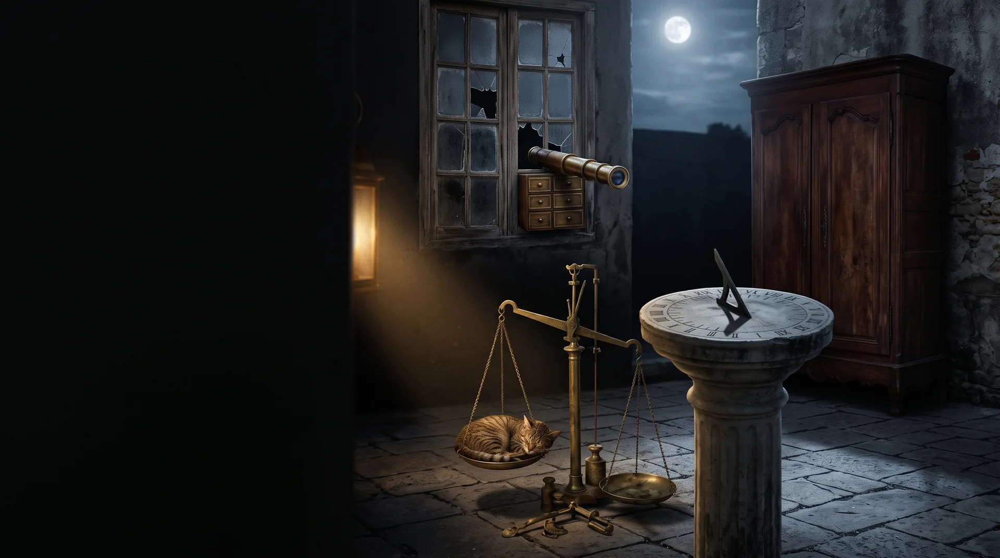
¿Qué palabra falta en el centro?
«Desorden»: nunca se nombra; se infiere por lectura radial.
§2 c · Engranaje 3
un tercer término que resume semánticamente los dos primeros
Sarduy 1972, §2 c · Cabrera Infante, Tres tristes tigres
«El régimen del sentido es el de la libertad vigilada» (Barthes): las condensaciones vigilan el juego y hacen surgir sentido.
§2 c · Condensación visual
Antes, la anamorfosis: una figura sólo se ve desde otro punto de vista.
Cruz-Diez: estrías pintadas con tres colores; el cuadro cambia si el espectador está a la izquierda, al frente o a la derecha. El desplazamiento es «comparable a la lectura».
Cine: superposición de imágenes (sincrónica, Torre Nilsson) o de secuencias en la memoria (diacrónica, Glauber Rocha).
Obras de Cruz-Diez y Le Parc: consultar en sus sitios oficiales (no se reproducen aquí)
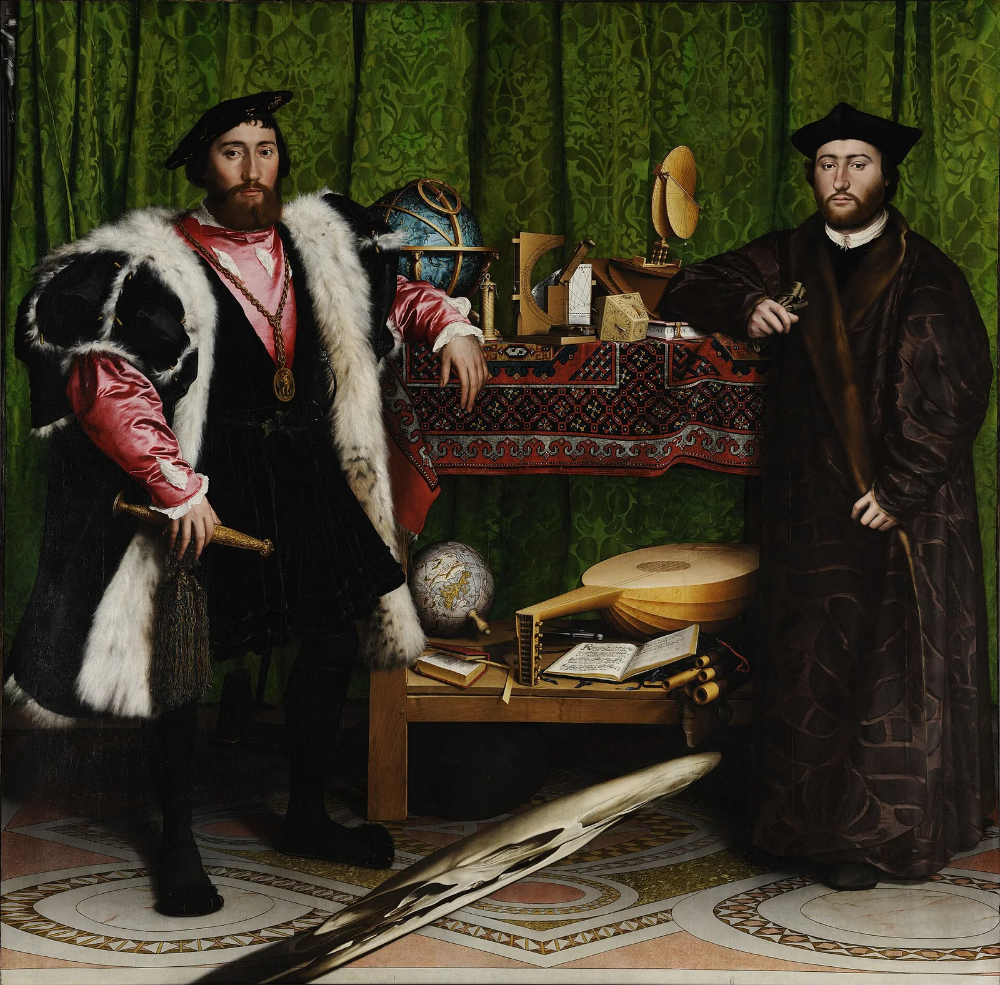
§2 · Síntesis del artificio
¿Qué significante falta, y cuál lo reemplaza desde lejos?
Figura 1
¿Alrededor de qué ausencia avanza la cadena, sin cerrarse?
Figura 2 · arco abierto, «etc.»
¿Qué dos significantes se ponen en escena y se funden en un tercero?
Figura 3
Los mecanismos se combinan: en Gran sertón: veredas, el Diablo nunca es nombrado (sustitución) y una cadena de nombres lo rodea (proliferación).
Taller · en grupos de 4
Roles: lector/a · diagramador/a · fiscal de evidencia · portavoz
Taller · especímenes
Gran sertón: veredas. El Diablo nunca se nombra; lo rodean decenas de apodos.
Clave: S + P (según Sarduy)
Canto general: «Guayaquil, sílaba de lanza, filo de estrella ecuatorial…»
Clave: P · constelación que dispersa el sentido
«maquinoscrito»: máquina + manuscrito.
Clave: C · condensación
Una fuente con forma de papaya (en argot cubano, también el sexo femenino).
Clave: S que erotiza la obra entera
«slithy» = lithe (ágil) + slimy (viscoso). (añadido)
Clave: C · la «descendencia lewiscarrolliana»
Primero sueño: «Piramidal, funesta, de la tierra / nacido sombra…» (añadido)
Clave: P alrededor de «noche», no nombrada
§3 · Parodia
Robert Jammes, sobre una parodia de Góngora a un romance de Lope: hay que leer el texto anterior
en filigrana para poder gustar totalmente de él
…y por eso sería un género menor.
Filigrana: la marca de agua que sólo aparece a contraluz.
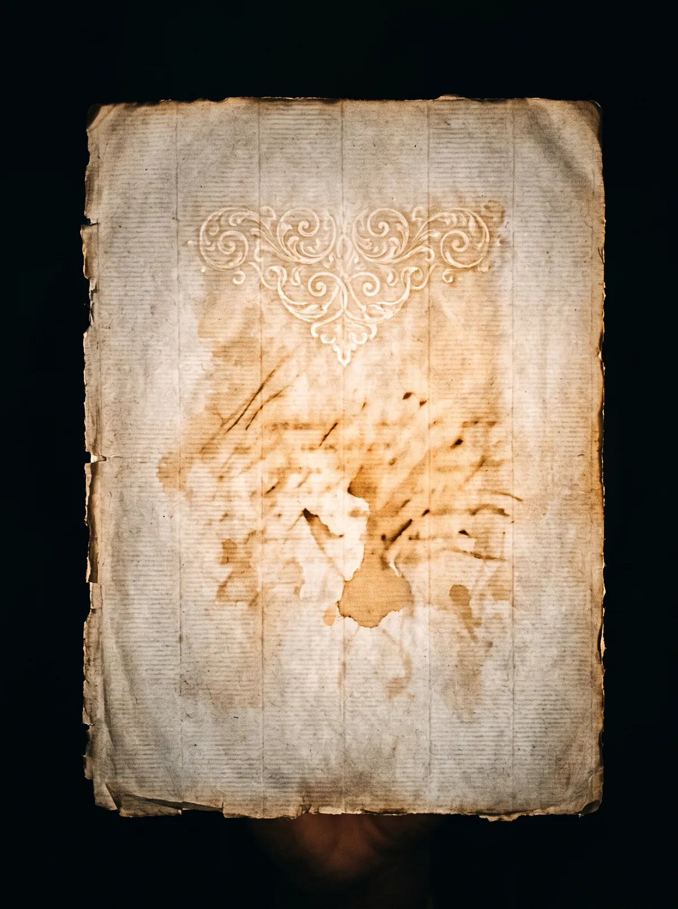
Actividad · leer en filigrana
Lope de Vega
Ensíllenme el potro rucio
del alcaide de los Vélez
Góngora
Ensíllenme el asno rucio
del alcalde Antón Llorente
Completen: «La parodia corona ___ y destrona ___». ¿Género menor o mayor?
Sarduy no nombra el romance: este par es el ejemplo más citado de esa parodia.
§3 · Bajtín y el carnaval
Sarduy invierte a Jammes: sólo si hay que leerla en filigrana, la obra latinoamericana pertenece a un género mayor.
una apoteosis que esconde una irrisión
La coronación paródica del carnaval · Sarduy 1972, §3
Carnavalización = polifonía: textos que dialogan dentro del texto. Pero es barroca sólo si ocupa los puntos nodales de la obra.
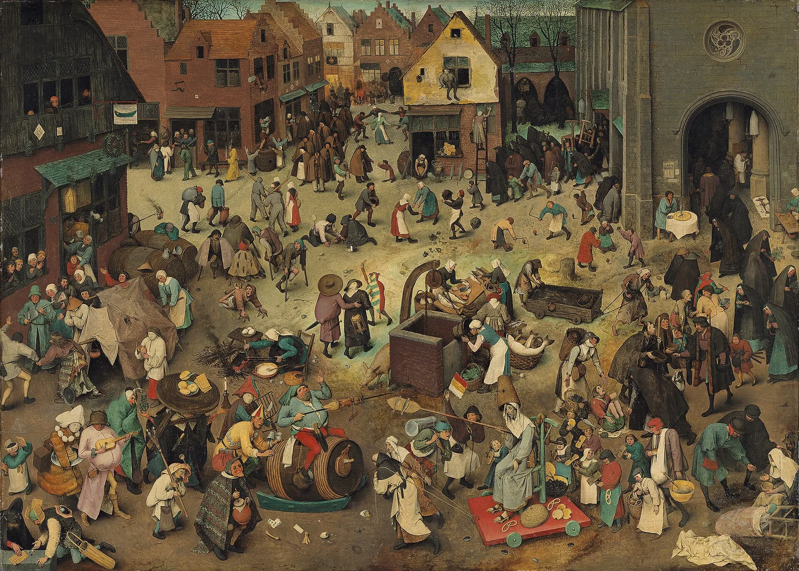
§3 b · Intratextualidad
Gramas fonéticos: el anagrama, el palíndromo…
DÁBALE ARROZ A LA ZORRA EL ABAD
ANITA LAVA LA TINA
Gramas sémicos: en Paradiso, «mal de muerte» y «traspiés en la alabanza» apuntan a una frase hecha que nunca aparece…
el «mal de ojo»
Díaz, con François Wahl: la zona de los gramas es «probablemente la más superflua» del ensayo.
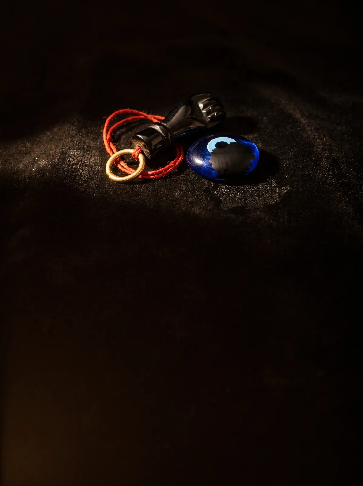
§4 a · Erotismo
El espacio barroco es el de la superabundancia y el desperdicio. Busca un objeto que siempre falta: el objeto (a) de Lacan.
Cada suplemento —otra voluta, otro ángel (Lezama)— constata un fracaso, y por eso se repite.
¡Cuánto trabajo perdido!
Juego, no trabajo: erotismo como derroche, parodia de la función reproductiva.
¿Su palabra del comienzo era de trabajo o de juego?
suplementos: 0
§4 b · Espejo
La obra barroca refleja lo que la envuelve y quiere ser
a la vez totalizante y minucioso
…pero no lo logra: algo le opone su opacidad, le niega su imagen. Como el espejo de los Arnolfini, o el espejo gongorino, «aunque cóncavo fiel».
Van Eyck (1434) no es barroco: Sarduy lo usa como emblema del reflejo que resume y reduce.
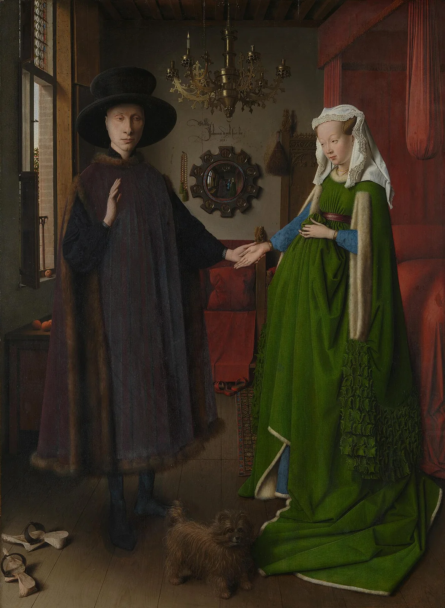
§4 b · El barroco actual
El barroco histórico: un universo descentrado «pero aún armónico», bajo un logos exterior (el dios jesuita, el rey).
El neobarroco refleja estructuralmente la carencia: el logos ya sólo es una pantalla que esconde el vacío.
reflejo necesariamente pulverizado de un saber
«Arte del destronamiento y la discusión» · Sarduy 1972, §4 b
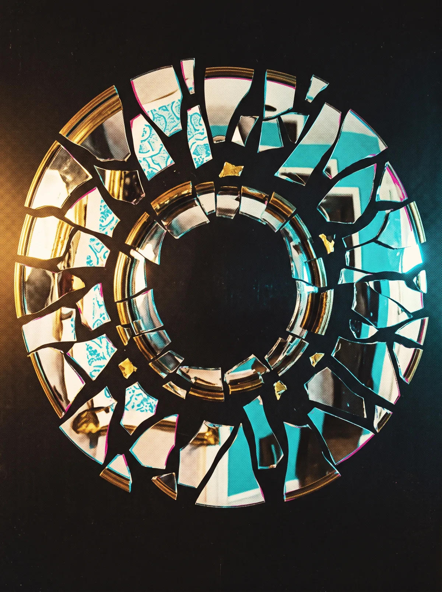
§4 b · Síntesis
§4 c · Debate
La frase de Lezama: «sintácticamente incorrecta», pierde el hilo, no cae sobre sus pies: metaforiza el orden discutido, el dios juzgado, la ley transgredida.
Impugna el logos desde la forma misma del lenguaje.
El volumen de 1972 fue más estético que político (Gilman, vía Díaz).
Díaz: en 1972 «Revolución» es la cubana; la de Sarduy es una «postulación, aún eufórica», una grieta interior que luego abandona.
Apostilla 4 · Prueba de estrés
Tan específica (tres mecanismos, dos parodias) como general: ¿qué obra quedaría fuera? Por de pronto, el realismo.
Hoy, llamar «neobarroca» a una obra «equivale a no decir casi nada». Queda la fuerza de la noción: un modo de mirar.
Ticket de salida · individual
Para la próxima semana
Elijan un espécimen latinoamericano (una página, una imagen, un edificio, una performance) y pónganlo en la máquina:
1.000-1.200 palabras · al menos cuatro citas breves con página · sugerencias: Lemebel, Juan Luis Martínez, Eltit, Zurita, el neobarroso
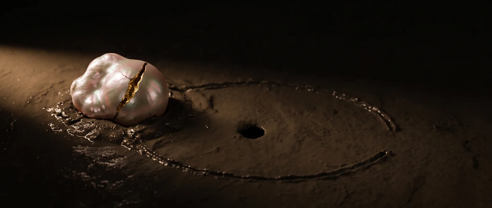
Créditos
Texto. Severo Sarduy, «El barroco y el neobarroco» (1972), en C. Fernández Moreno (coord.), América Latina en su literatura, Siglo XXI/UNESCO. Ed. con apostillas de Valentín Díaz, El Cuenco de Plata, 2011. Citas breves con fines docentes.
Figuras 1-3. Reconstrucción según Sarduy 1972 (SVG propios).
Esquemas 3D. Modelados con scripts de Blender 5.2 y mostrados con three.js (MIT). Dispositivos genéricos: no reproducen obras de ningún artista; las láminas que aparecen dentro de ellos se generaron con IA (✦).
Imágenes generadas con IA (✦). Gemini · Nano Banana 2: perla, jardín, festín, halcón, patio de Carpentier, islas, filigrana, azabache, espejo, capitel y las láminas de los esquemas 3D. Evocaciones; no reproducen ninguna obra.
Dominio público (Wikimedia Commons). Caravaggio, Madonna di Loreto; Leonardo, Virgen de las Rocas (det.); Kepler, Astronomia nova; Harvey, De motu cordis; Hals, Descartes; Velázquez, Góngora; Borromini, planta de San Carlo (Albertina); Blaeu, Tabula Magellanica; Holbein, Los embajadores; Bruegel, Combate entre Carnaval y Cuaresma; Van Eyck, Arnolfini; Velázquez, Las Meninas; Tenniel, Alicia.
Licencias libres. Retablo de San Esteban (Salamanca): foto Zarateman, CC0 · Rueda de libros: CC0 · Cúpula de San Carlo alle Quattro Fontane: Fiat 500e, CC BY-SA 4.0.
Bibliografía citada. Agamben, «¿Qué es un paradigma?» (2009) · Barthes, «La cara barroca» · Carrera, «Todo sobre el neobarroco» (2009) · D’Ors, Lo barroco · H. de Campos, «Barroco, Neobarroco, Transbarroco» (2004) · Gilman, Entre la pluma y el fusil (2003) · Guerrero, «Sarduy: la religión del vacío» (2002) · Lacan, «Del barroco», Seminario XX · Sarduy, Obra completa (1999).
→ avanzar ← retroceder F pantalla completa E 3D ampliado B pantalla negra N°+Intro ir a